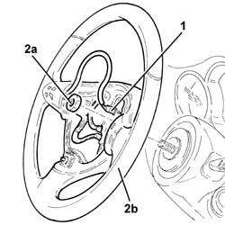
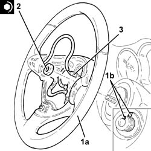

4110A16 steering wheel - r r for replacement or checks for versions with airbag and manual gearbox with hydraulic selection
- Path
- Procedures > 41 STEERING > 4110 STEERING CONTROL AND LINKAGE > 4110A steering control > 4110A16 steering wheel - r r for replacement or checks for versions with airbag and manual gearbox with hydraulic selection
- Kind
- repair procedure (removal / refitting; the operation number is the code)
- Applies to
- engines: 2.0 TS; all production periods
- Interactive page
- https://sloeber94.github.io/elrnDB-a147/en/#/3025283
Applies to: engines: 2.0 TS; all production periods; only with equipment: Cambio robotizzato
 Removing
Removing
 Refitting
RefittingPlace the steering wheel in the centred position with the wheels straight.
Proceed with the removal 5580C18 air bag module - r+r .
1. Disconnect the electrical connection from the interconnection control unit.
2. Undo the nut (2a) and remove steering wheel (2b).

Applies to: engines: 2.0 TS; all production periods; only with equipment: Cambio robotizzato
Refitting
Removing1. Refit steering wheel (1a) in its seat so that references (1b) stamped on the steering wheel and steering column are aligned.
2. Tighten the fixing nuts to the recommended torque.
 | Fastening | Component | Ø | Value (daNm) |
|---|---|---|---|---|
2 | Nut | STEERING WHEEL | M16 | 5.0 |
3. Connect the electrical connection to the interconnection control unit.

Applies to: engines: 2.0 TS; all production periods; only with equipment: Cambio robotizzato
Proceed with the refitting 5580C18 air bag module - r+r .